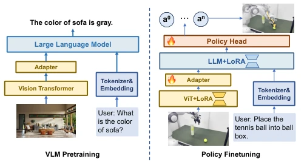
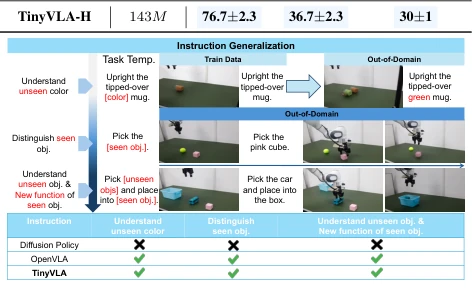
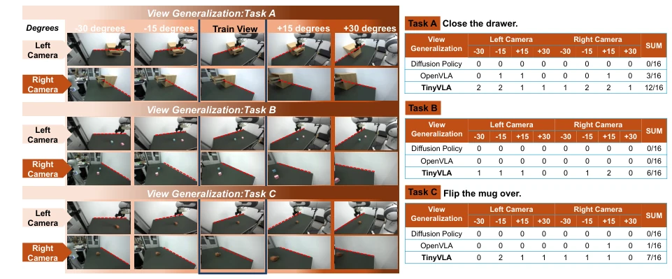
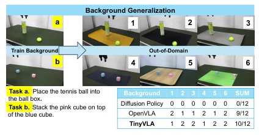
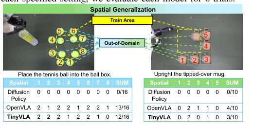
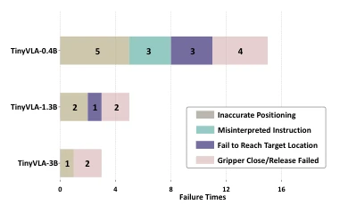

The name TinyVLA is quite modest; in reality, it employs a 'small horse pulling a big cart' strategy to address the bloat of VLA models. Instead of stacking large models, it compresses the VLM to under 1B, paired with a Diffusion Policy decoder to directly eliminate the slow bottleneck of autoregressive action generation. Although its spatial generalization capability is slightly inferior to OpenVLA's, which relies on massive data accumulation, it outperforms OpenVLA by 20 times in inference speed, offering a cost-performance ratio that effectively 'reduces the burden' for robot deployment. However, do not expect it to dominate all scenarios like a giant model; with fewer parameters, understanding complex spatial relationships still relies somewhat on luck. Overall, this is a pragmatic engineering optimization, demonstrating that VLA can be mastered without pre-training on million-level robot data.
Existing VLA models such as OpenVLA [10] and RT-2 [9], although powerful in performance, suffer from two major drawbacks: slow inference speed and high training data requirements. OpenVLA relies on the OpenX dataset [11] for large-scale pre-training, resulting in high computational costs, and the autoregressive generation of action tokens leads to high latency, making it difficult to meet real-time interaction requirements. In real-world robot deployment, latency directly impacts user experience and task effectiveness. Furthermore, traditional methods struggle to adapt to new scenarios and interference. TinyVLA aims to construct a new model that retains VLA advantages while possessing fast inference and data efficiency, addressing the pain points of 'large models, slow inference, high threshold,' and enabling VLA to truly be deployed.
The overall architecture of TinyVLA is divided into two stages: pre-trained VLM initialization and robot data fine-tuning. First, a lightweight VLM with parameters under 1B is constructed as the policy backbone, replacing existing 7B+ large models such as Pythia or LLaVA architectures. During fine-tuning, VLM weights are frozen, and only 5% of parameters are fine-tuned using LoRA [29] technology, retaining language prior knowledge. The core innovation lies in the action decoder: abandoning autoregressive token prediction and adopting Diffusion Policy [3] as the policy head to directly output continuous actions. After input is encoded by the VLM and combined with proprioceptive state, a 3-layer MLP generates condition embeddings, which are then used by DDPM denoising to generate actions. This design avoids the training difficulties of discrete tokenization while leveraging the efficient sampling characteristics of diffusion models, significantly reducing inference latency and enabling fine-tuning without large-scale robot pre-training. Additionally, LoRA modules are integrated via reparameterization technology to further improve inference speed.

Fig. 2: Model architecture. The left image illustrates the VLM pretraining pipeline, whereas the right image demon- strates the process of training TinyVLA using robotic data. We adopt diffusion policy as our policy head.
Experiments cover MetaWorld simulation and Franka/UR5 real robots. Baselines include Diffusion Policy [3], Multimodal Diffusion [38], and OpenVLA [10]. Metrics include success rate, latency, and generalization capability. In simulation, TinyVLA-H achieves an average success rate of 31.6%, far exceeding Diffusion Policy's 10.5%. In real tasks, TinyVLA-H achieves an average success rate of 94.0%, 25.7% higher than OpenVLA, and is 20 times faster in inference. Generalization tests show that TinyVLA performs robustly under variations in viewpoint, background, interference, and lighting, outperforming Diffusion Policy and being comparable to OpenVLA. Spatial generalization is slightly inferior to OpenVLA, but while OpenVLA completely fails in dual-arm tasks, TinyVLA performs well. Ablation experiments confirm that the diffusion policy head is superior to MLP and ACT.

Fig. 4: Instruction Generalization. We conducted three dif- ferent types of instruction generalization experiments with progressively increasing difficulty. cess rate exceeds that of Diffusion Policy by 21.5%. Notably, the performance disparity widens in more complex tasks; for instance, on the MetaWorld Hard scenario, TinyVLA’s per- formance is sixfold better than that of Diffusion Policy. These results showcase the superiority of our proposed method. Real-world experimental results. The experimental results are shown in Table II. We evaluate each model 20 trials per task in single arm setting. We report the mean and standard deviation of success rates across 3 checkpoints. Notably, TinyVLA-H attained a 98.3% success rate in flipping a mug, stacking cubes, and a 90% success rate in place

Fig. 5: View Generalization. We evaluated the view generalization capability of our model in a new environment, which we designed to be as consistent with the training environment as possible. We tested 3 tasks respectively, and the results under 8 viewing angle changes (the two cameras each correspond to 4 changes).For each specified camera view(e.g. Left Camera -30 degrees), we evaluate each model for 2 trials.

Fig. 6: Background Generalization. We utilized six different backgrounds, testing three of them on Task a and the remaining three on Task b. For each background, we evaluate each model for two trials.

Fig. 9: Spatial generalization. We conducted evaluations at multiple positions thoroughly outside the training zone on two position-sensitive tasks:place tennis and flip mug. For each out-of-distribution positions, we evaluate each model for 2 trials. of distractors. In Figure 7 (top), we present the StackCube task featuring an additional distractor, categorized into two difficulty levels. Our model effectively manages both types of distractors at each difficulty level, whereas the Diffusion Policy and OpenVLA struggles with both. This demonstrates that utilizing a pre-trained multimodal model significantly enhances generalization capabilities in the presence of distrac- tors. F. Spatial Generalization Spatial generalization [41]–[44] refers to the generalization to unseen setup of objects

Fig. 10: Types of failure for TinyVLA with different sizes of pre-trained vision-language models.